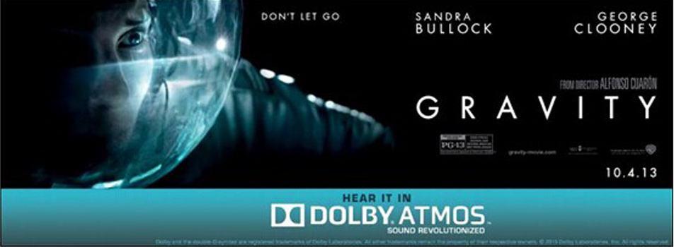
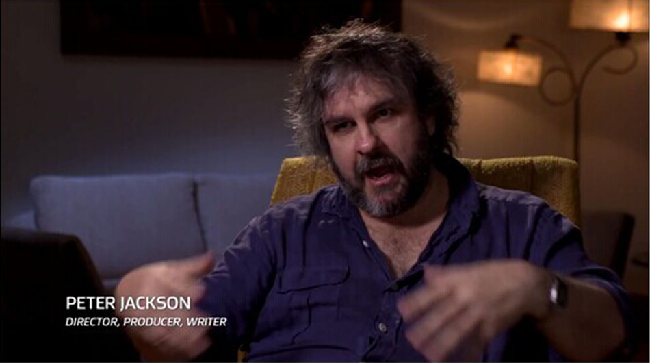

当前位置 > 主页 > 咨询
当前位置 > 主页 > 咨询
电影导演教你欣赏杜比全景声音效
100多部采用杜比全景声技术制作的大片，全球650多家杜比全景声放映厅， 相信你也曾几何时步入过某个全景声影院观看过某部全景声大片。也许您会说，感觉和普通影片没 什么不一样嘛。。。那么，让大导演告诉你应该怎样欣赏全景声大片。
《地心引力》，导演：艾方索•柯朗
勇夺7项奥斯卡大奖，其中包括最佳音效剪辑，最佳配乐2项声效奖项。 导演在接受采访时告诉了大家这部影片音效的一个与众不同的地方：太空里是没有声音的，声音无法通 过真空传输。那么如何弥补缺失的电影音效呢?答案就是音乐，音乐也是与太空中的寂静最大的对比。 于是宇航员在太空遇到状况，身体开始漂浮旋转的时候，耳边的配乐也开始随 着画面360度旋转起来，而这就是杜比全景声最擅长的场景之一。
《饥饿游戏2，星火燎原》
《饥饿游戏2，星火燎原》，导演：弗朗西斯•劳伦斯
很巧，女主角和导演都姓劳伦斯。如果“大表姐“詹妮弗•劳伦斯的照片泄露再早一些的话，那么这部影片的票房会不会创新高呢
导演说道：这部影片的音效一直想给大家带来身临其境的感觉，但同时又怕刻意营造这种气氛过于突兀。所以影片中大量的丛林场景就成为了全景声最好的用武之地，声音从 各个维度包围着你，毒雾来袭，猴子追杀，这些场景的音效无不使你觉得真正置身于那个危险的丛林之中。
《霍比特人2：史矛革之战》
《霍比特人2：史矛革之战》，导演:彼得•杰克逊
这个新西兰大胡子鬼才导演的上一个三部曲《指环王》获得了共获得30个奥斯卡奖项提名，最后收获了17座小金人。如果他想在和《霍比特人》上也获得同样的辉煌的话，那 么他就要在最后一部上加把劲了。不管怎样，《霍比特人》全球大卖的票房是不争的事实。而且在今年的奥斯卡上也获得了包括2项音效奖项在内的3项提名。彼得在采访的时候也 一再强调，《霍比特人2》的音轨是非常非常复杂的，包含了太多的信息，而且制作精良，Academy肯定也认可了这一点，否则也不会获得奥斯卡提名。。。提名。。。提名（看 来大胡子还是很在意这个的）。
看看大导演是怎么说的：我最满意的是那些”安静”的时刻，通过杜比全景声创造出的风声，背景声，感觉将你包围其中。谈到场景，那么矮人们在酒桶中漂流而下逃过兽追 杀的这一幕是展示音效的绝佳范例。河流在你耳边奔流，兽人和精灵在头顶越过，各个扬声器中发出不同的声音，共同营造出无敌的空间感，感觉你就是影片中酒桶中的那个矮人。
什么，你觉得推荐晚了，影片已经下线了。没关系，那么就去选购一套支持杜比全景声的家庭影院吧。随着2014年8月ONKYO安桥宣布将杜比全景声技术引入家庭影院功放产 品，以后在家中也可以欣赏到从头顶包围到四周的真3D音效了，这样想看哪一段就跳到哪一段。如果家中已有家庭影院，通过简单的设置即可将现有家庭影院系统升级至最新的杜 比全景声影院。只要买一台支持杜比全景声的功放，如安桥TX-NR636/TX-NR737/TX-NR838，以及一对安桥SKH-410杜比认证全景声专用扬声器，就可立即将家中的5.1声道影院 升级至5.1.2声道的杜比全景声影院，SKH-410扬声器通过仰角式设计，将顶部的声音通过房顶反射的方式传至观众的耳中。
怎么样？是不是也想把自己的影院变成浩瀚的宇宙、恐怖的丛林？又或是霍比特人的奇异旅程？入手一台杜比全景声功放吧！温习一下这些经典电影的精彩片段，感受一下过 去没有体验过的出色音效。杜比全景声必将是2014年家庭影院产品的最热门关键词之一，期待更多产品的到来。